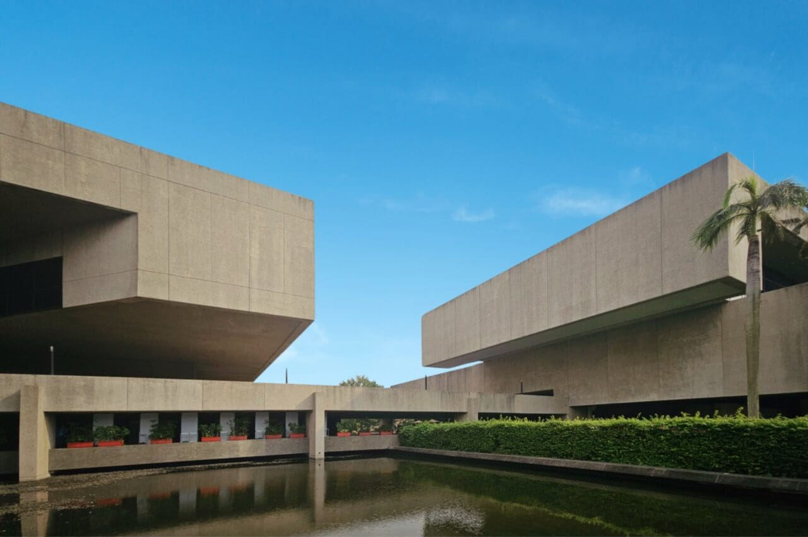
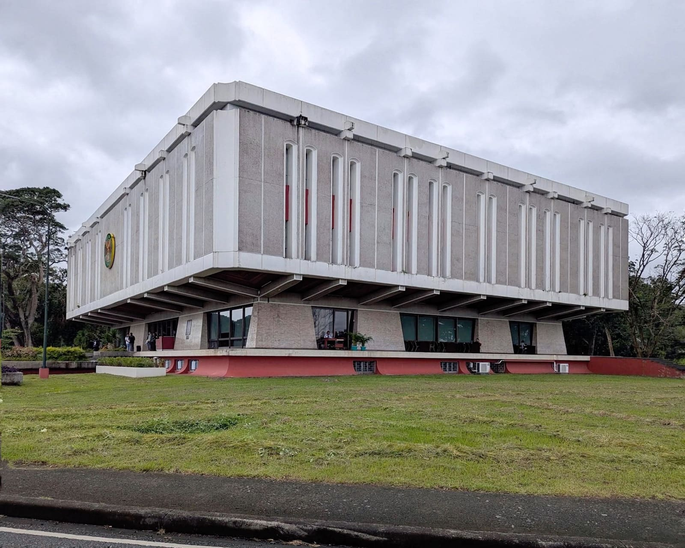
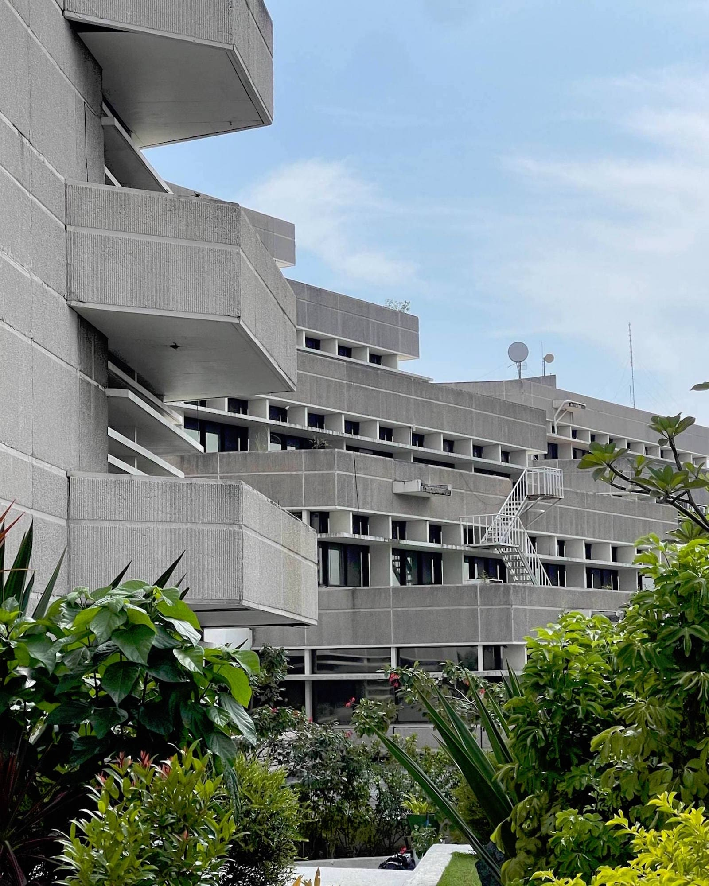
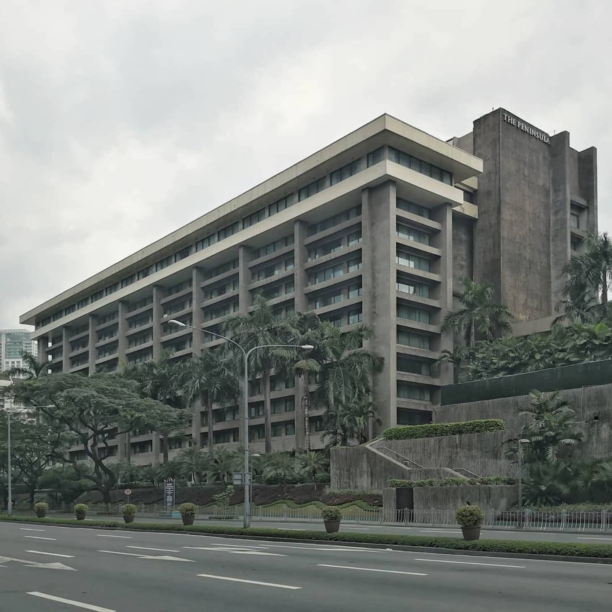
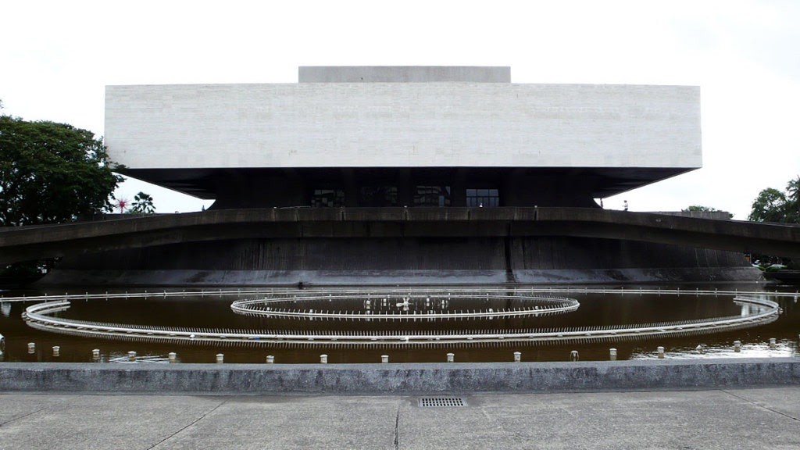
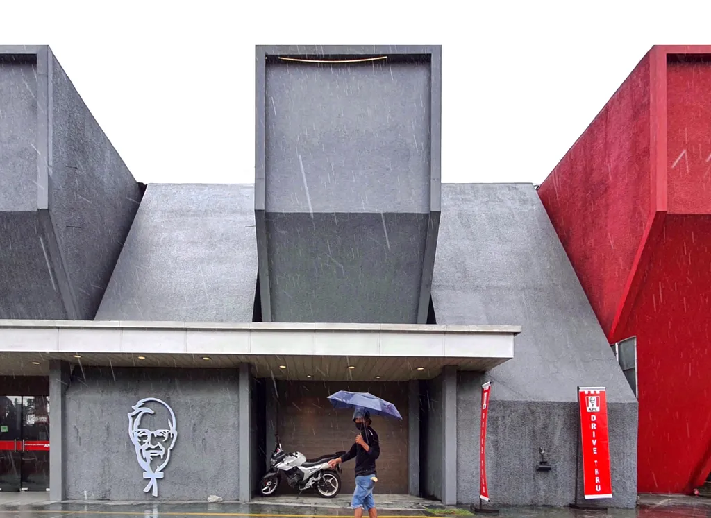
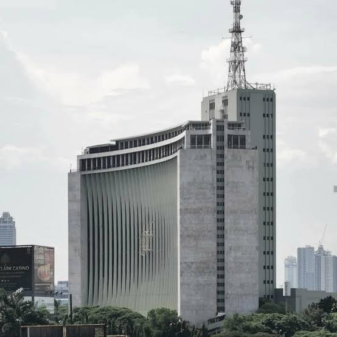

[ 01 - MANIFESTO // OVERVIEW ]
BRUTALISM IN THE PHILIPPINES
Unearthing Southeast Asia's most intense concentration of raw concrete architecture. A stark testament to state-led modernism, structural honesty, and monumental scale.
[ 02 - THE START // HISTORY ]
Brutalist architecture arrived in the Philippines during the 1960s and 1970s—a pivotal post-independence era of rapid institutional building. Influenced heavily by Le Corbusier’s philosophy of "truth to materials" and propelled by the state's drive toward monumental nation-building under the Marcos administration.
WHEN
CONCRETE
BECAME
CULTURE.
[ 03 - CAPTURES // ARCHIVE ]
ARCHIVE

Philippine International Convention Center

University of the Philippines Los Baños Main Library

Government Service Insurance System (GSIS) Complex

The Peninsula Manila

Cultural Center of the Philippines

Pacific Machines Building

Meralco Building
[ 04 - DESIGN // PRINCIPLES ]
DESIGN PRINCIPLES
RAW CONCRETE
[P.01]Complete rejection of surface treatment. Texture relies entirely on wooden aggregate formwork.
GEOMETRIC MASSING
[P.02]Heavy, rectilinear blocks projecting outward, defining dramatic structural cantilevers.
MONUMENTAL SCALE
[P.03]Civic and institutional presence designed to evoke mass, permanence, and state authority.
FUNCTIONAL HONESTY
[P.04]External form directly exposes internal load paths. Structural columns are proudly celebrated.
REPETITIVE MODULES
[P.05]Use of uniform grid templates, structural pillars, and raw concrete textures.
EXPOSED STRUCTURE
[P.06]HVAC systems, services, and structural columns remain visible, refusing ornamental disguise.
[ 05 - THE MAKERS // ARCHITECTS ]
ARCHITECTS
Leandro V. Locsin
National Artist for ArchitectureThe foremost pioneer of tropical concrete modernism. He unified sweeping monumental form with delicate regional airy traditions, rendered entirely in mass-cast concrete.
CORE INVENTORY:Cultural Center of the Philippines, PICC, Istana Nurul Iman
JORGE RAMOS
Modernist PioneerRenowned for heavy sculptural lines and expressive institutional works, blending monumentality with stark geopolitical functions.
CORE INVENTORY:GSIS Building, Philippine Heart Center
GABRIEL FORMOSO
functional planning, and climate-responsive designHis firm describes his architectural vocabulary in terms of simplicity, rigid geometry, a restrained palette, and exposed concrete.
CORE INVENTORY:Asian Institute of Management, Bank of America–Lepanto building, The Peninsula Building
FELIPE MENDOZA
Slab ArchitectExplored heavy horizontal planes and deep concrete eaves, mastering natural tropical cross-ventilation in massive forms.
CORE INVENTORY:Batasang Pambansa, Development Academy of the Philippines
[ 06 - THE LEGACY // IMPACT ]
LEGACY & PRESERVATION
Today, the brutalist heritage of the Philippines sits at a precarious crossroad. Often associated with the authoritarian regime that built them, these structural monuments face active threats of decay, privatization, and demolition.
However, a new wave of local conservationists, architects, and designers is working tirelessly to reframe these concrete masterpieces—appreciating them purely for their unmatched structural courage and formal mastery.